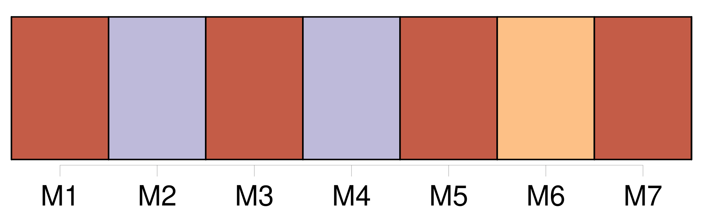
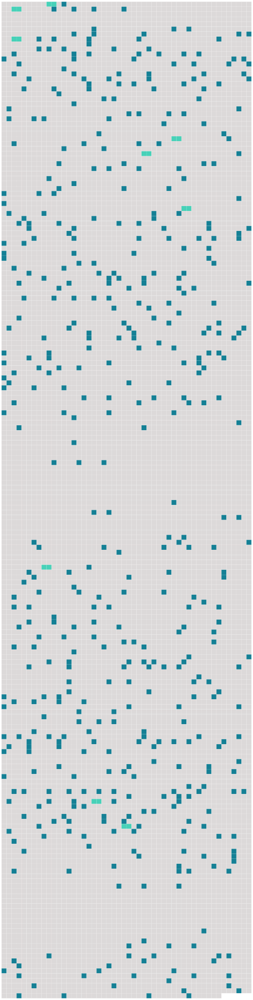

Longueur nb maillons : 514 mentions |
 |
Je les connaissais pour avoir vu le nom de [leur fille] , [Marthe] , dans le catalogue d'une exposition de peinture. [1 phrases] Il était venu, avec un carton empli des œuvres de [sa fille] , âgée de dix-huit ans. [Marthe] était malade. [Son] père aurait voulu [lui] faire une surprise : que [ses] aquarelles figurassent dans une exposition de charité dont ma mère était présidente. [8 phrases] Mais où était [Marthe] ?? Je tremblais à la perspective d'une promenade sans autre compagnie que celle de [ses] parents. [Elle] devait venir par le prochain train, « dans un quart d'heure, expliqua Mme Grangier, n'ayant pu être prête à temps.
[Son] frère arriverait avec [elle] ». Quand le train entra en gare, [Marthe] était debout sur le marchepied du wagon. « Attends bien que le train s'arrête », [lui] cria [sa] mère ……
[Cette imprudente] me charma. [Sa] robe, [son] chapeau, très simples, prouvaient [son] peu d'estime pour l'opinion des inconnus. [Elle] donnait la main à un petit garçon qui paraissait avoir onze ans.
C'était [son] frère, enfant pâle, aux cheveux d'albinos, et dont tous les gestes trahissaient la maladie. Sur la route, [Marthe] et moi marchions en tête. [2 phrases] Comme je complimentais [Marthe] sur [ses] aquarelles, [elle] me répondit modestement que c'étaient des études. [Elle] n'y attachait aucune importance. [Elle] me montrerait mieux, des fleurs « stylisées ».
Je jugeai bon, pour la première fois, de ne pas [lui] dire que je trouvais ces sortes de fleurs ridicules. Sous [son] chapeau, [elle] ne pouvait bien me voir.
Moi, je [l'] observais. — [Vous] ressemblez peu à madame [votre] mère, [lui] dis -je. [1 phrases]
— On [me] le dit quelquefois ; mais, quand vous viendrez à la maison, [je] vous montrerai des photographies de maman lorsqu'elle était jeune, [je] lui ressemble beaucoup.
Je fus attristé de cette réponse, et je priai Dieu de ne point voir [Marthe] quand [elle] aurait l'âge de [sa] mère.
Voulant dissiper le malaise de cette réponse pénible, et ne comprenant pas que, pénible, elle ne pouvait l'être que pour moi, puisque heureusement [Marthe] ne voyait point [sa] mère avec mes yeux, je [lui] dis : [2 phrases] — Vous pourrez le demander à maman ( comme si [elle] avait besoin de se justifier!! ) ; d'habitude, [je] ne me coiffe pas si mal, mais [j'] étais déjà en retard et [je] craignais de manquer le second train.
D'ailleurs, [je] n'avais pas l'intention d'ôter [mon] chapeau. « Quelle fille était [-ce] donc, pensais -je, pour admettre qu'un gamin [la] querelle à propos de [ses] mèches??
» [1 phrases] [Ses] parents avaient fini par admettre [ses] goûts. [Marthe] leur en voulait que ce fût par tendresse. [Son] fiancé, dans ses lettres, [lui] parlait de ce qu'il lisait, et s'il [lui] conseillait certains livres, il [lui] en défendait d'autres. Il [lui] avait défendu Les Fleurs du mal. Désagréablement surpris d'apprendre qu' [elle] était fiancée, je me réjouis de savoir qu' [elle] désobéissait à un soldat assez nigaud pour craindre Baudelaire. Je fus heureux de sentir qu'il devait souvent choquer [Marthe] [2 phrases] [Son] fiancé [lui] avait aussi défendu les académies de dessin. Moi qui n'y allais jamais, je [lui] proposai de l'y conduire, ajoutant que j'y travaillais souvent. Mais, craignant ensuite que mon mensonge fût découvert, je [la] priai de n'en point parler à mon père. [1 phrases] Car je ne voulais pas qu' [elle] pût se figurer que je cachais l'académie à mes parents, parce qu'ils me défendaient de voir des femmes nues.
J'étais heureux qu'il se fit un secret entre nous, et moi, timide, me sentais déjà tyrannique avec [elle] [1 phrases] Quelquefois [ses] parents [l'] appelaient : « Regarde, [Marthe] , à [ta] droite, comme les coteaux de Chennevières sont jolis », ou bien, [son] frère s'approchait d' [elle] et [lui] demandait le nom d'une fleur qu'il venait de cueillir.
[Elle] leur accordait d'attention distraite juste assez pour qu'ils ne se fâchassent point. [2 phrases] « Après une conversation moins sentimentale, plus naturelle, pensai -je, je pourrais éblouir [Marthe] , et m'attirer la bienveillance de [ses] parents, en racontant le passé de ce village. [3 phrases] C'était d'ailleurs vrai, simplement, je le sus dans la suite, parce que [Marthe] avait faussé notre conversation dans le même sens que moi. Mais moi qui ne pouvais m'en rendre compte, je me figurais [lui] avoir adressé des paroles significatives. [1 phrases]
J'oubliais que M. et Mme Grangier eussent pu entendre sans le moindre inconvénient tout ce que j'avais dit à [leur fille] ; mais, moi, aurais -je pu le [lui] dire en leur présence? — [Marthe] ne m'intimide pas, me répétais -je.
Donc, seuls, [ses] parents et mon père m'empêchent de me pencher sur [son] cou et de [l'] embrasser. [1 phrases]
Celui -ci pensait :
Car je n'oserais pas davantage [l'] embrasser, et n'aurais aucune excuse. [5 phrases] Ils rappelaient à [sa fille] que je n'étais encore qu'un lycéen, qui passerait son baccalauréat dans un an. [Marthe] voulut boire de la grenadine ; j'en commandai aussi. [4 phrases]
Il le fit, mais à mots couverts, de façon que [Marthe] ne devinât pas que je buvais de la grenadine pour faire comme [elle] [2 phrases]
Je promis à [Marthe] de [lui] porter, le jeudi suivant, la collection du journal Le Mot et Une saison en enfer.
— Encore un titre qui plairait à [mon] fiancé!
[Elle] riait. — Voyons, [Marthe] !!
dit, fronçant les sourcils, [sa] mère qu'un tel manque de soumission choquait toujours. [3 phrases] Mais je n'étais pas d'humeur à supporter qu'il me raillât de n'avoir pas embrassé [Marthe] en cachette. [1 phrases]
Ressentant de l'amour pour [Marthe] , j'en ôtais à René, à mes parents, à mes sœurs. Je me promettais bien cet effort de volonté de ne pas venir [la] voir avant le jour de notre rendez -vous. [1 phrases]
Dans cette impatience, [Marthe] verrait la preuve de mon amour, disais -je, et si [elle] refuse de la voir, je saurais bien [l'] y contraindre. Pendant un quart d'heure, je courus comme un fou jusqu'à [sa] maison. Alors, craignant de [la] déranger pendant [son] repas, j'attendis, en nage, dix minutes, devant la grille. [6 phrases] Je demandai à la domestique si [Madame] était chez [elle] [2 phrases]
Rougissant, je priai Mme Grangier de m'excuser de la déranger à pareille heure, comme s'il eût été une heure du matin : ne pouvant venir jeudi, j'apportais le livre et les journaux à [sa fille] — Cela tombe à merveille, me dit Mme Grangier, car [Marthe] n'aurait pu vous recevoir. [Son] fiancé a obtenu une permission, quinze jours plus tôt qu'il ne pensait.
Il est arrivé hier, et [Marthe] dîne ce soir chez [ses] futurs beaux-parents.
Je m'en allai donc, et puisque je n'avais plus de chance de [la] revoir jamais, croyais -je, m'efforçais de ne plus penser à [Marthe] , et, par cela même, ne pensant qu'à [elle] Pourtant, un mois après, un matin, sautant de mon wagon à la gare de la Bastille, je [la] vis [qui] descendait d'un autre. [Elle] allait choisir dans des magasins différentes choses, en vue de [son] mariage.
Je [lui] demandai de m'accompagner jusqu'à Henri Iv.
— Tiens, dit [-elle] , l'année prochaine, quand vous serez en seconde, vous aurez [mon] beau-père pour professeur de géographie.
Vexé qu' [elle] me parlât études, comme si aucune autre conversation n'eût été de mon âge, je [lui] répondis aigrement que ce serait assez drôle. [Elle] fronça les sourcils.
Je pensai à [sa] mère. Nous arrivions à Henri Iv, et, ne voulant pas [la] quitter sur ces paroles que je croyais blessantes, je décidai d'entrer en classe une heure plus tard, après le cours de dessin. Je fus heureux qu'en cette circonstance [Marthe] ne montrât pas de sagesse, ne me [fit] aucun reproche, et, plutôt, [semblât] me remercier d'un tel sacrifice, en réalité nul.
Je [lui] fus reconnaissant qu'en échange [elle] ne me proposât point de [l'] accompagner dans [ses] courses, mais qu' [elle] me donnât [son] temps comme je [lui] donnais le mien. [3 phrases] Au cours de la conversation, [Marthe] m'ayant appris qu' [elle] déjeunait chez ses beaux-parents, je décidai de [la] résoudre à rester avec moi. [1 phrases] [Marthe] sursauta, point encore habituée à ce qu'on abandonnât pour [elle] tous ses devoirs, fussent -ils des devoirs de classe.
Mais, voyant que je restais sur ma chaise de fer, [elle] n'eut pas le courage de me rappeler que j'aurais dû être assis sur les bancs de Henri Iv. [3 phrases] [Marthe] se leva, comme quelqu'un qui, après la sieste, et le visage encore enduit de sommeil, secoue ses rêves. [Elle] faisait avec [ses] bras des mouvements de gymnastique. [1 phrases]
— Ces chaises sont trop dures, me dit [-elle] , comme pour s'excuser d'être debout. [Elle] portait une robe de foulard, chiffonnée depuis qu' [elle] s'était assise. [1 phrases]
— Allons, accompagnez -moi dans les magasins, puisque vous êtes décidé à ne pas aller en classe, dit [Marthe] , faisant pour la première fois allusion à ce que je négligeais pour [elle]
Je [l'] accompagnai dans plusieurs maisons de lingerie, [l'] empêchant de commander ce qui [lui] plaisait et ne me plaisait pas ; par exemple, évitant le rose, qui m'importune, et qui était [sa] couleur favorite. Après ces premières victoires, il fallait obtenir de [Marthe] qu' [elle] ne déjeunât pas chez [ses] beaux-parents. Ne pensant pas qu' [elle] pouvait leur mentir pour le simple plaisir de rester en ma compagnie, je cherchai ce qui [la] déterminerait à me suivre dans l'école buissonnière. [Elle] rêvait de connaître un bar américain. [Elle] n'avait jamais osé demander à [son] fiancé de l'y conduire. [2 phrases] À [son] refus, empreint d'une véritable déception, je pensai qu' [elle] viendrait. Au bout d'une demi-heure, ayant usé de tout pour [la] convaincre, et n'insistant même plus, je [l'] accompagnai chez [ses] beaux-parents, dans l'état d'esprit d'un condamné à mort espérant jusqu'au dernier moment qu'un coup de main se fera sur la route du supplice. [1 phrases]
Mais soudain, [Marthe] , frappant à la vitre, arrêta le chauffeur du taxi devant un bureau de poste.
[Elle] me dit :
[Je] vais téléphoner à [ma] belle-mère que [je] suis dans un quartier trop éloigné pour arriver à temps. [1 phrases] Je ne pensais pas tant au plaisir de [Marthe] qu'à la nécessité pour [elle] de mentir encore ce soir pour expliquer à [ses] parents d'où venaient les roses. Notre projet, lors de la première rencontre, d'aller à une académie de dessin ; le mensonge du téléphone qu' [elle] répéterait, ce soir, à [ses] parents, mensonge auquel s'ajouterait celui des roses, m'étaient des faveurs plus douces qu'un baiser. Car, ayant souvent embrassé, sans grand plaisir, des lèvres de petites filles, et oubliant que c'était parce que je ne les aimais pas, je désirais peu les lèvres de [Marthe] [1 phrases] [Marthe] sortait de la poste, rayonnante, après le premier mensonge. [1 phrases] [Elle] s'extasiait, comme une pensionnaire, sur la veste blanche du barman, la grâce avec laquelle il secouait les gobelets d'argent, les noms bizarres ou poétiques des mélanges. [Elle] respirait de temps en temps les roses rouges dont [elle] se promettait de faire une aquarelle, qu' [elle] me donnerait en souvenir de cette journée. Je [lui] demandai de me montrer une photographie de [son] fiancé. [1 phrases] Sentant déjà quelle importance [elle] attachait à mes opinions, je poussai l'hypocrisie jusqu'à [lui] dire qu'il était très beau, mais d'un air peu convaincu, pour [lui] donner à penser que je le [lui] disais par politesse.
Ce qui, selon moi, devait jeter le trouble dans l'âme de [Marthe] , et, de plus, m'attirer [sa] reconnaissance. Mais, l'après-midi, il fallut songer au motif de [son] voyage. [Son] fiancé, dont [elle] savait les goûts, s'en était remis complètement à [elle] du soin de choisir leur mobilier. Mais [sa] mère voulait à toute force [la] suivre. [Marthe] , enfin, en lui promettant de ne pas faire de folies, avait obtenu de venir seule. [Elle] devait, ce jour -là, choisir quelques meubles pour leur chambre à coucher.
Bien que je me fusse promis de ne montrer d'extrême plaisir ou déplaisir à aucune des paroles de [Marthe] , il me fallut faire un effort pour continuer de marcher sur le boulevard d'un pas tranquille qui maintenant ne s'accordait plus avec le rythme de mon cœur. Cette obligation d'accompagner [Marthe] m'apparut comme une malchance. Il fallait donc [l'] aider à choisir une chambre pour [elle] et un autre!!
Puis, j'entrevis le moyen de choisir une chambre pour [Marthe] et pour moi.
J'oubliais si vite [son] fiancé, qu'au bout d'un quart d'heure de marche, on m'aurait surpris en me rappelant que, dans cette chambre, un autre dormirait auprès d' [elle]
[Son] fiancé goûtait le style Louis Xv. Le mauvais goût de [Marthe] était autre ; [elle] aurait plutôt versé dans le japonais. [2 phrases]
Au moindre mot de [Marthe] , devinant ce qui [la] tentait, il me fallait [lui] désigner le contraire, qui ne me plaisait pas toujours, afin de me donner l'apparence de céder à [ses] caprices, quand j'abandonnerais un meuble pour un autre, qui dérangeait moins [son] œil. [Elle] murmurait : « Lui qui voulait une chambre rose. » N'osant même plus m'avouer [ses] propres goûts, [elle] les attribuait à [son] fiancé. [2 phrases] « Si [elle] ne m'aime pas, pensai -je, quelle raison a-t [-elle] de me céder, de sacrifier [ses] préférences, et celles de ce jeune homme, aux miennes?? [1 phrases] La plus modeste eût été encore de me dire que [Marthe] m'aimait. [1 phrases] [Marthe] m'avait dit : « Au moins laissons -lui l'étoffe rose. [3 phrases]
Je représentai à [Marthe] combien ces murs roses gâcheraient les meubles simples que « nous avions choisis », et, reculant encore devant le scandale, [lui] conseillai de faire peindre les murs de [sa] chambre à la chaux! [1 phrases] Toute la journée, [Marthe] avait été tellement harcelée qu' [elle] le reçut sans révolte. [Elle] se contenta de me dire : « En effet, vous avez raison. [3 phrases] En me quittant, ce soir -là, au lieu d'éviter désormais mes conseils, [elle] m'avait prié de [l'] aider les jours suivants dans le choix de [ses] autres meubles.
Je le [lui] promis, mais à condition qu' [elle] me jurât de ne jamais le dire à [son] fiancé, puisque la seule raison qui pût à la longue lui faire admettre ces meubles, s'il avait de l'amour pour [Marthe] , c'était de penser que tout sortait d' [elle] , de [son] bon plaisir, qui deviendrait le leur. [3 phrases] Jacques s'habituera bien à cette chambre », avait dit [Marthe] En me couchant, je me répétai que, si [elle] songeait à son mariage avant de dormir, [elle] devait, ce soir, l'envisager de tout autre sorte qu' [elle] ne l'avait fait les jours précédents.
Pour moi, quelle que fût l'issue de cette idylle, j'étais, d'avance, bien vengé de [son] Jacques : je pensais à la nuit de noces dans cette chambre austère, dans « ma » chambre! [3 phrases] Manquer la classe voulait dire, selon moi, que j'étais amoureux de [Marthe] [1 phrases] [Marthe] ne m'était que le prétexte de cette école buissonnière. Et la preuve, c'est qu'après avoir goûté en compagnie de [Marthe] aux charmes de la liberté, je voulus y goûter seul, puis faire des adeptes. [4 phrases] Les classes m'avaient toujours été un supplice ; [Marthe] et la liberté avaient achevé de me les rendre intolérables. [8 phrases] Puis, je partis au bord de la Marne, où [Marthe] m'avait dit qu' [elle] me rejoindrait peut-être. [Elle] n'y était pas. [24 phrases] Ce que je voulais, c'était faire un travail, guère plus fatigant qu'une promenade, et qui laissât comme elle, à mon esprit, la liberté de ne pas se détacher de [Marthe] une minute. [3 phrases] À force de penser à [Marthe] , j' [y] pensai de moins en moins. [5 phrases] Lorsque quelque chose, venu de l'extérieur, m'obligeait à penser moins paresseusement à [Marthe] , j' [y] pensais sans amour, avec la mélancolie que l'on éprouve pour ce qui aurait pu être. [10 phrases] La joie de donner enfin satisfaction à mon père comblait un peu le vide sentimental dans lequel je me trouvais car, si je croyais ne plus aimer [Marthe] , je [la] considérais du moins comme le seul amour qui eût été digne de moi.
C'est dire que je [l'] aimais encore. J'étais dans ces dispositions de cœur quand, à la fin de novembre, un mois après avoir reçu une lettre de faire-part de [son] mariage, je trouvai, en rentrant chez nous, une invitation de [Marthe] qui commençait par ces lignes : « [Je] ne comprends rien à votre silence. Pourquoi ne venez -vous pas [me] voir?? Sans doute avez -vous oublié que vous avez choisi [mes] meubles??
… » ; [sa] rue descendait jusqu'à la Marne. [2 phrases]
En réalité, [Marthe] habitait seulement le haut, les propriétaires et un vieux ménage se partageant le bas. [7 phrases] Une vieille femme ouvrit la porte : je lui demandai où demeurait [Mme Lacombe] ( tel était le nouveau nom de [Marthe] ) : « C'est au-dessus. [2 phrases] C'est [Marthe] qui vint m'ouvrir. Je faillis [lui] sauter au cou, comme les gens qui se connaissent à peine, après avoir échappé au naufrage. [Elle] n'y eût rien compris.
Sans doute me trouva-t [-elle] l'air égaré, car, avant toute chose, je [lui] demandai pourquoi « il y avait le feu ».
— C'est qu'en vous attendant, [j'] avais fait dans la cheminée du salon un feu de bois d'olivier, à la lueur duquel [je] lisais.
En entrant dans la petite chambre qui [lui] servait de salon, peu encombrée de meubles, et que les tentures, les gros tapis doux comme un poil de bête, rétrécissaient jusqu'à lui donner l'aspect d'une boîte, je fus à la fois heureux et malheureux comme un dramaturge qui, voyant sa pièce, y découvre trop tard des fautes.
[Marthe] s'était de nouveau étendue le long de la cheminée, tisonnant la braise, et prenant garde à ne pas mêler quelque parcelle noire aux cendres. [1 phrases]
Ce sont [mes] beaux-parents qui en ont fait venir pour [moi] une provision de leur propriété du Midi. [Marthe] semblait s'excuser d'un détail de [son] cru, dans cette chambre qui était mon œuvre.
Peut-être cet élément détruisait -il un tout, qu' [elle] comprenait mal. [1 phrases] Ce feu me ravit, et aussi de voir qu' [elle] attendait comme moi de se sentir brûlante d'un côté, pour se retourner de l'autre. [Son] visage calme et sérieux ne m'avait jamais paru plus beau que dans cette lumière sauvage. [2 phrases] [Marthe] ignorait ce que c'est que d'être mutine.
Dans [son] enjouement, [elle] restait grave. Mon esprit s'engourdissait peu à peu auprès d' [elle] , je [la] trouvai différente. C'est que, maintenant que j'étais sûr de ne plus [l'] aimer, je commençais à [l'] aimer. [2 phrases] Ce brusque changement aurait ouvert les yeux de tout autre : je ne vis pas que j'étais amoureux de [Marthe] [1 phrases]
Cette longue perspective d'amitié me fit admettre soudain combien un autre sentiment eût été criminel, lésant un homme qui [l'] aimait, à qui [elle] devait appartenir, et qui ne pouvait [la] voir. [1 phrases] Il y a quelques mois, quand je rencontrais [Marthe] , mon prétendu amour ne m'empêchait pas de [la] juger, de trouver laides la plupart des choses qu' [elle] trouvait belles, la plupart des choses qu' [elle] disait, enfantines. Aujourd'hui, si je ne pensais pas comme [elle] , je me donnais tort. [2 phrases]
Je commençais à respecter [Marthe] , parce que je commençais à [l'] aimer. Je revins tous les soirs ; je ne pensai même pas à [la] prier de me montrer [sa] chambre, encore moins à [lui] demander comment Jacques trouvait nos meubles. [1 phrases] Mais [Marthe] , [qui] goûtait le même charme, croyait le goûter seule. Dans ma paresse heureuse, [elle] lut de l'indifférence.
Pensant que je ne [l'] aimais pas, [elle] s'imagina que je me lasserais vite de ce salon silencieux, si [elle] ne faisait rien pour m'attacher à [elle] [2 phrases] Je me sentais tellement près de Marthe, avec la certitude que nous pensions en même temps aux mêmes choses, que [lui] parler m'eût semblé absurde, comme de parler haut quand on est seul. [2 phrases] À me voir tous les jours m'enfoncer de plus en plus dans ce mutisme délicieux, [Marthe] se figura que je m'ennuyais de plus en plus.
[Elle] se sentait prête à tout pour me distraire. [Sa] chevelure dénouée, [elle] aimait dormir près du feu. Ou plutôt je croyais qu' [elle] dormait. [Son] sommeil [lui] était prétexte, pour mettre [ses] bras autour de mon cou, et une fois réveillée, les yeux humides, me dire qu' [elle] venait d'avoir un rêve triste. [Elle] ne voulait jamais me le raconter. Je profitais de [son] faux sommeil pour respirer [ses] cheveux, [son] cou, [ses] joues brûlantes, et en les effleurant à peine pour qu' [elle] ne se réveillât point ; toutes caresses qui ne sont pas, comme on croit, la menue monnaie de l'amour, mais, au contraire, la plus rare, et auxquelles seule la passion puisse recourir. [2 phrases] Je me passerai bien de l'amour, pensai -je, mais jamais de n'avoir aucun droit sur [Marthe] [1 phrases]
Je désirais [Marthe] et ne le comprenais pas. Quand [elle] dormait ainsi, [sa] tête appuyée contre un de mes bras, je me penchais sur [elle] pour voir [son] visage entouré de flammes. [4 phrases] [Elle] fermait encore les yeux, mais visiblement comme quelqu'un qui ne dort pas. Je [l'] embrassai, stupéfait de mon audace, alors qu'en réalité c'était [elle] qui, lorsque j'approchais de [son] visage, avait attiré ma tête contre [sa] bouche. [Ses] deux mains s'accrochaient à mon cou ; elles ne se seraient pas accrochées plus furieusement dans un naufrage.
Et je ne comprenais pas si [elle] voulait que je [la] sauve, ou bien que je me noie avec [elle] Maintenant, [elle] s'était assise, [elle] tenait ma tête sur [ses] genoux, caressant mes cheveux, et me répétant très doucement : « Il faut que tu t'en ailles, il ne faut plus jamais revenir. » Je n'osais pas [la] tutoyer ; lorsque je ne pouvais plus me taire, je cherchais longuement mes mots, construisant mes phrases de façon à ne pas [lui] parler directement, car si je ne pouvais pas [la] tutoyer, je sentais combien il était encore plus impossible de [lui] dire vous. [1 phrases] S'il en tombait une sur la main de [Marthe] , je m'attendais toujours à [l'] entendre pousser un cri. Je m'accusai d'avoir rompu le charme, me disant qu'en effet j'avais été fou de poser mes lèvres contre les siennes, oubliant que c'était [elle] qui m'avait embrassé. [3 phrases] Si j'avais parlé, ç'aurait été pour injurier [Marthe] Mon silence [l'] inquiéta ; [elle] y voyait de la résignation. « Puisqu'il est trop tard, [la] faisais -je penser, dans mon injustice peut-être clairvoyante, après tout, j'aime autant qu'il souffre. [3 phrases] Je [lui] dis : « Je ne m'en irai pas. [Vous] vous êtes moquée de moi. Je ne veux plus [vous] voir.
»
Je [l'] aurais plutôt chassée de chez [elle] ! Mais [elle] sanglotait : « Tu es un enfant. Tu ne comprends donc pas que si [je] te demande de t'en aller, c'est que [je] t'aime.
» [Elle] secouait la tête : « Avant toi, [j'] étais heureuse, [je] croyais aimer [mon] fiancé. [Je] lui pardonnais de ne pas bien [me] comprendre. C'est toi qui [m'] as montré que [je] ne l'aimais pas. [Mon] devoir n'est pas celui que tu penses. Ce n'est pas de ne pas mentir à [mon] mari, mais de ne pas te mentir. Va-t'en et ne [me] crois pas méchante ; bientôt tu [m'] auras oubliée. Mais [je] ne veux pas causer le malheur de ta vie. [Je] pleure, parce que [je] suis trop vieille pour toi!! [4 phrases] Quelques minutes après, non seulement j'étais habitué à la bouche de [Marthe] , mais encore je ne pouvais plus m'en passer.
Et c'est alors qu' [elle] parlait de m'en priver à tout jamais. Ce soir -là, [Marthe] me reconduisit jusqu'à la maison. Pour me sentir plus près d' [elle] , je me blottissais sous cape, et je [la] tenais par la taille. [Elle] ne disait plus qu'il ne fallait pas nous revoir ; au contraire, [elle] était triste à la pensée que nous allions nous quitter dans quelques instants.
[Elle] me faisait [lui] jurer mille folies. Devant la maison de mes parents, je ne voulus pas laisser [Marthe] repartir seule, et [l'] accompagnai jusque chez [elle] Sans doute ces enfantillages n'eussent -ils jamais pris fin, car [elle] voulait m'accompagner encore.
J'acceptai, à condition qu' [elle] me laisserait à moitié route. [10 phrases] [Marthe] était à [moi] ; ce n'est pas moi qui l'avais dit, [c'] était [elle] Je pouvais toucher [sa] figure, embrasser [ses] yeux, [ses] bras, [l'] habiller, [l'] abîmer, à ma guise. Dans mon délire, je [la] mordais aux endroits où [sa] peau était nue, pour que [sa] mère [la] soupçonnât d'avoir un amant. [2 phrases] [Marthe] disait : « Oui, mords [-moi] , marque [-moi] , [je] voudrais que tout le monde sache ……
» Je n'osais pas le [lui] demander, pensant qu' [elle] saurait les offrir [elle -même] , comme [ses] lèvres.
Au bout de quelques jours, l'habitude d'avoir [ses] lèvres étant venue, je n'envisageai pas d'autre délice. [1 phrases] [Elle] y jetait souvent des lettres que [son] mari [lui] envoyait, chaque jour, du front. À leur inquiétude, on devinait que celles de [Marthe] se faisaient de moins en moins tendres et de plus en plus rares. [2 phrases] [Marthe] , [qui] souvent maintenant me demandait s'il était vrai que je [l'] avais aimée dès notre première rencontre, me reprochait de ne le [lui] avoir pas dit avant son mariage. [Elle] ne se serait pas mariée, prétendait [-elle] ; car, si [elle] avait éprouvé pour Jacques une sorte d'amour au début de leurs fiançailles, celles -ci trop longues, par la faute de la guerre, avaient peu à peu effacé l'amour de [son] cœur. [Elle] n'aimait déjà plus Jacques quand [elle] l'épousa.
[Elle] espérait que ces quinze jours de permission accordés à Jacques transformeraient peut-être [ses] sentiments. [2 phrases] Et Jacques [l'] aimait toujours davantage. Ses lettres étaient de quelqu'un qui souffre, mais plaçant trop haut [sa Marthe] pour [la] croire capable de trahison. Aussi n'accusait -il que lui, [la] suppliant seulement de lui expliquer quel mal il avait pu [lui] faire : « Je me trouve si grossier à côté de [toi] , je sens que chacune de mes paroles [te] blesse.
» [Marthe] lui répondait seulement qu'il se trompait, qu' [elle] ne lui reprochait rien. [2 phrases] Les jours où [elle] ne m'accompagnait pas à Paris, [Marthe] , nue sous un peignoir, attendait que je revinsse de mes cours de dessin, étendue devant la cheminée où brûlait toujours l'olivier de [ses] beaux-parents. [Elle] leur avait demandé de renouveler [sa] provision. [3 phrases]
Au fait, ne considérais -je pas [Marthe] plutôt comme une vierge, livrée, la première quinzaine de ses noces, à un inconnu et plusieurs fois prise par lui de force. Le soir, seul dans mon lit, j'appelais [Marthe] , m'en voulant, moi qui me croyais un homme, de ne l'être pas assez pour finir d' [en] faire ma maîtresse.
Chaque jour, allant chez [elle] , je me promettais de ne pas sortir qu' [elle] ne le fût. [2 phrases] Car il me semblait que ce qui jusqu'ici avait entravé mes désirs, c'était la peur du ridicule, de me sentir habillé, lorsqu' [elle] ne l'était pas. [1 phrases]
Puis, je rougis, comprenant ce que [son] cadeau contenait de reproches. Dès le début de notre amour, [Marthe] m'avait donné une clef de [son] appartement, afin que je n'eusse pas à [l'] attendre dans le jardin, si, par hasard, [elle] était en ville. [2 phrases] Je quittai [Marthe] en [lui] promettant de venir déjeuner le lendemain avec [elle] [6 phrases] Moi qui goûtais d'avance l'effroi de [Marthe] quand j'entrerais dans [sa] chambre, je pensais maintenant à [ses] éclats de rire en voyant paraître ce Prince Charmant, un panier de ménagère à son bras. [29 phrases] Pour me rendre jusque chez [Marthe] , je suivis la Marne. [5 phrases] La grille de [Marthe] était fermée. [3 phrases] [Marthe] était si nerveuse!! Peut-être s'évanouirait [-elle] en me voyant dans [sa] chambre. [6 phrases] Peut-être [Marthe] ne me pardonnerait jamais.
Ou bien si j'allais tout à coup apprendre qu' [elle] me trompe, et [la] trouver avec un homme! [1 phrases]
Je murmurai :
[Elle] répondit : [1 phrases]
[Elle] me prenait pour Jacques! Or, si je voyais de quelle façon [elle] l'eût accueilli, j'apprenais du même coup qu' [elle] me cachait déjà quelque chose. [2 phrases] [Elle] restait tournée contre le mur. [1 phrases]
Je [l'] embrassai dans le cou. [2 phrases]
Alors, [elle] se retourna et poussa un cri.
D'une seconde à l'autre, [elle] changea d'attitude et, sans prendre la peine de s'expliquer ma présence nocturne : [1 phrases] [Elle] courut ranimer le feu dans le salon.
À [son] retour dans la chambre, comme je ne bougeais pas, [elle] dit : [1 phrases] Mais [Marthe] repartait, revenait, repartait dans la cuisine, pour voir si l'eau de mon grog était chaude. Enfin, [elle] me trouva nu sur le lit, me cachant à moitié sous l'édredon.
[Elle] me gronda : c'était fou de rester nu ; il fallait me frictionner à l'eau de Cologne. Puis, [Marthe] ouvrit une armoire et me jeta un costume de nuit. [2 phrases]
Et je pensais à l'arrivée, fort possible, de ce soldat, puisque [Marthe] y avait cru. [1 phrases] [Marthe] m'y rejoignit. Je [lui] demandai d'éteindre. Car, même en [ses] bras, je me méfiais de ma timidité. [1 phrases]
[Marthe] me répondit doucement : [Je] veux te voir t'endormir. |
 |
Il est possible de télécharger la ressource sur la page Ortolang |
Si vous avez des questions ou vous voyez des erreurs, merci d'envoyer un mail à silvia.federzoni89@gmail.com |